Baltimore Dynamics
Machines for the worst parts of a city.
We started on the water, running autonomous hulls in Baltimore Harbor and partnering with Mr. Trash Wheel to help give them their radar and sensors. Now we're building rovers for the pipes under the street and aircraft that put water on fires.
Backed by Northrop Grumman and Mr. Trash Wheel.
Mr. Trash Wheel
01 · Jones Falls outlet, Inner Harbor
Baltimore's best-known robot eats trash.
Mr. Trash Wheel works the mouth of the Jones Falls and set the bar for what a machine can mean to this city. We're partnering with Mr. Trash Wheel to help give them their radar and sensors.
Mr. Trash Wheel backs our work. mrtrashwheel.com
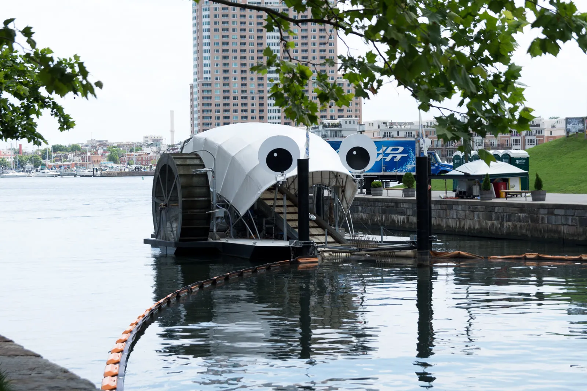
The river does the work.
- Floating booms steer what comes down the Jones Falls toward the wheel.
- The river's current turns a 14-foot water wheel. When the current is slow, solar panels run pumps that keep it turning.
- The wheel drives a rake and a conveyor that lift trash out of the water.
- The trash drops into a dumpster on its own barge, which is towed away when it is full.
Source: mrtrashwheel.com
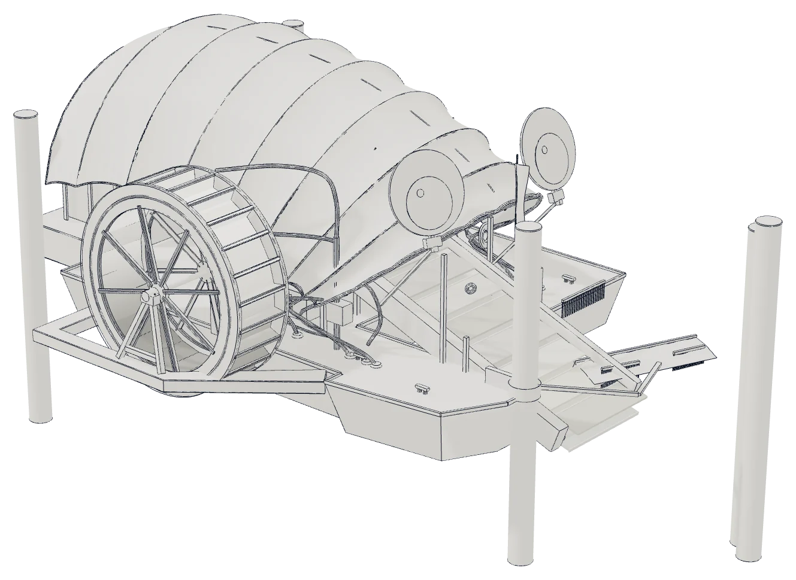
On the water since 2014.
- Installed May 2014, at the mouth of the Jones Falls
- Invented by John Kellett
- Commissioned by Waterfront Partnership of Baltimore
- Operated by Clearwater Mills
We're partnering with Mr. Trash Wheel to help give them their radar and sensors. We did not build the wheel and we do not run it. Source: mrtrashwheel.com
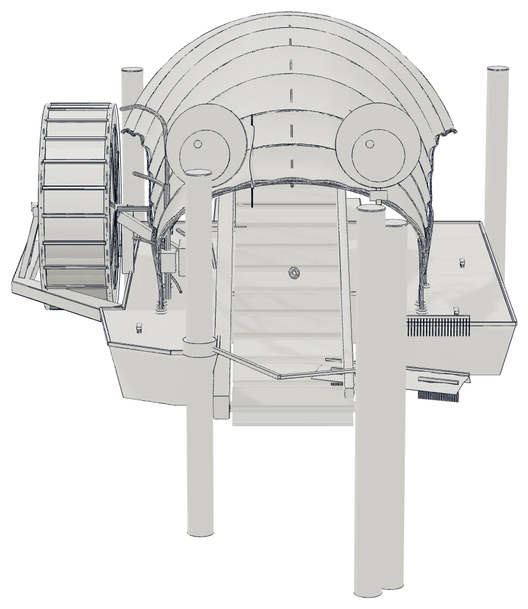
The Boat
02 · Fells Point, Baltimore Harbor
Then we put our own machines on the water.
Sophia Roberts-Weigert led the boat work. Mike Kardas ran the lab and put it on the water, on a boat that became our floating workshop. We rebuilt drones on the deck and ran autonomous hulls in Baltimore Harbor.
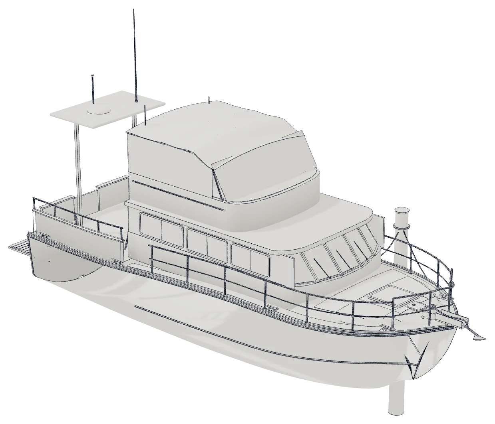
What we put on the water.
- AESV test hull Autonomous Environmental Survey Vessel. Test days in Baltimore Harbor, July 2024.
- The boat Our floating workshop.
- Solar water station Pier-mounted monitoring of pH, dissolved oxygen, turbidity and temperature. August 2025.
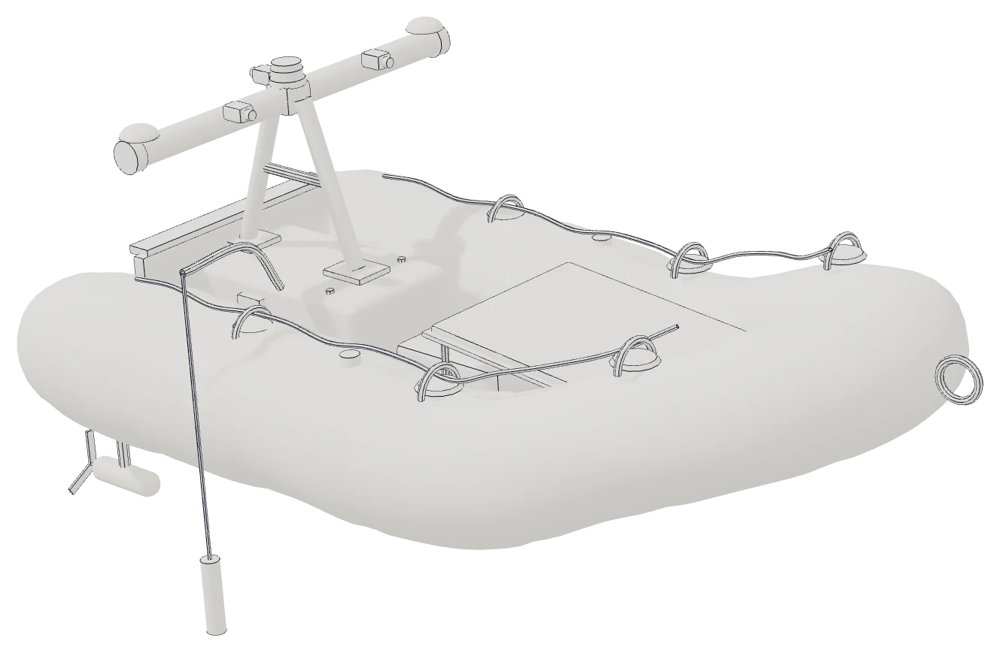
Autonomous Environmental Survey Vessel.
- CubePilot autopilot running ArduPilot
- Raspberry Pi 5 mission computer
- Slamtec lidar
- Three cameras
- 100 W solar panel
- pH, dissolved oxygen, turbidity and temperature sensors
Designed From the October 2023 system design.
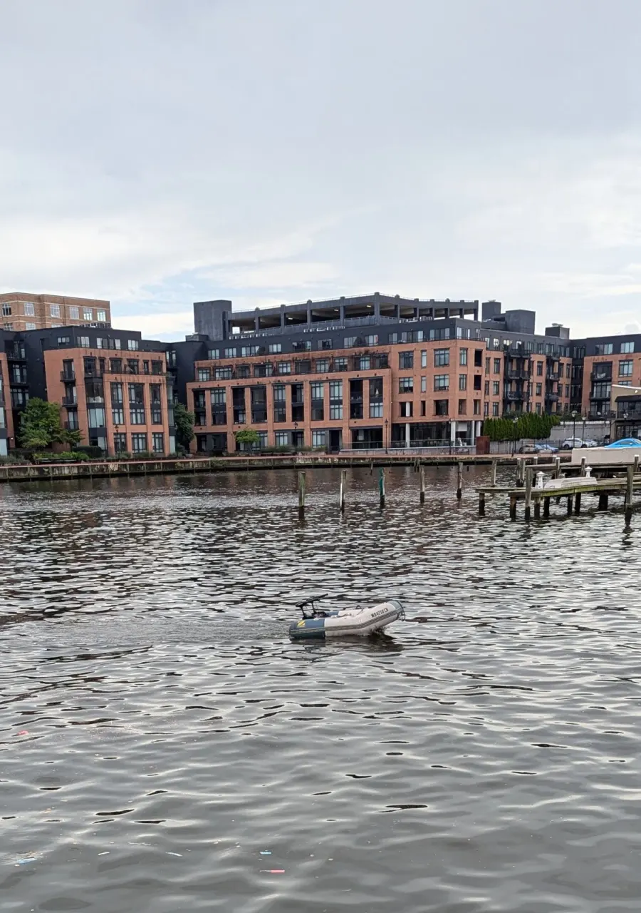
The work, in order.
- Drones over the Bay July 2022. Aerial collection runs for Chesapeake water sampling.
- Algae sampling May–June 2023. Field samples and imagery from algae blooms in Bay waters.
- AESV system design October 2023. Architecture for the Autonomous Environmental Survey Vessel: stationkeeping, dead-zone mapping and truth data for satellite sensors.
- AESV on the harbor July 2024. Test days for the autonomous hull in Baltimore Harbor.
- Coast Guard demo March 2025. The boat system demonstrated for the U.S. Coast Guard.
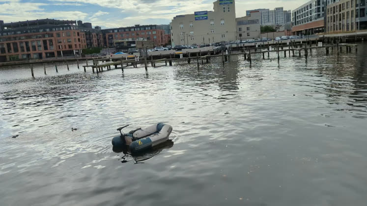
The Bay
03 · Chesapeake Bay
Where are the Bay's dead zones?
A dead zone is water with so little oxygen that fish and crabs can't live in it. Fertilizer washes into the Bay and feeds algae. When the algae die, bacteria use up the oxygen. Our first machines were built to find those places before they spread.
The low-oxygen overlay is illustrative and does not show measured data.
What a dead zone is.
A dead zone is water with so little oxygen that fish and crabs can't live in it.
How one forms
- Rain washes fertilizer and street runoff into the Bay.
- The fertilizer feeds algae, and the algae bloom.
- The algae die. Bacteria break them down and use up the oxygen in the water.
- With too little oxygen, fish and crabs leave or die. That water is a dead zone.
From the surface a dead zone looks like any other water. The only way to find one is to measure the oxygen.
Dead zone below 2 mg/L
Healthy water about 7 mg/L
- ~7 mg/L
- oxygen in healthy water
- <2 mg/L
- a dead zone: too little oxygen for fish
- 4 sensors
- acidity (pH), oxygen, cloudiness and temperature
What we built to find them.
A boat that could hold its position against the current, sensors that didn't need a person standing over them, and a record that scientists could check.
- AESV system design October 2023. Architecture for the Autonomous Environmental Survey Vessel: stationkeeping, dead-zone mapping and truth data for satellite sensors.
- Solar water station August 2025. Pier-mounted monitoring of pH, dissolved oxygen, turbidity and temperature.
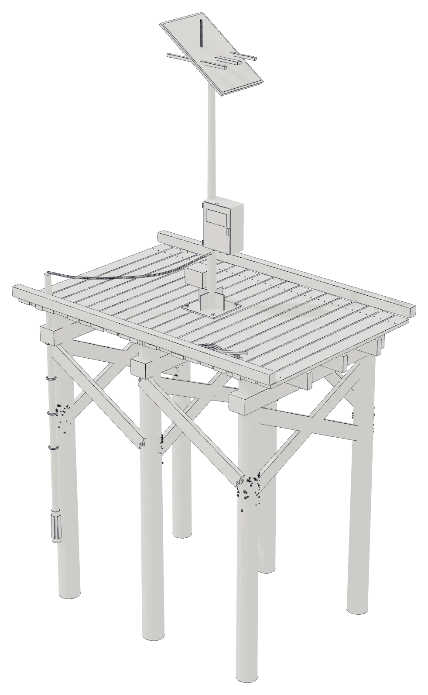
From the field.
- Algae sampling May–June 2023. Field samples and imagery from algae blooms in Bay waters.
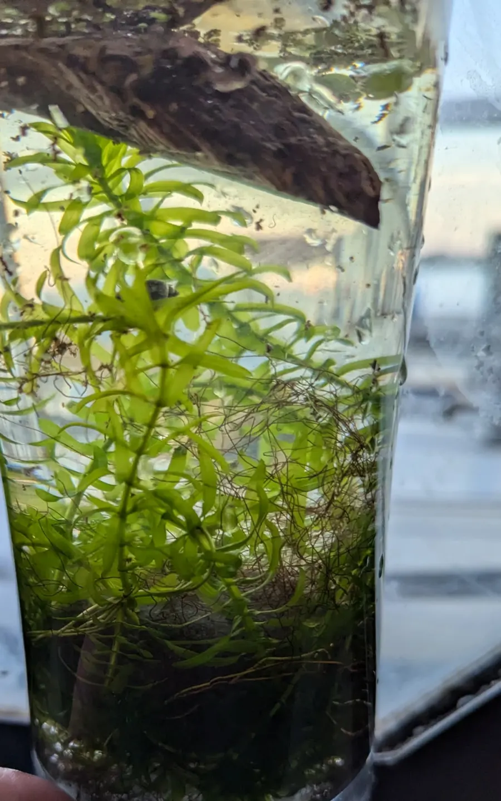
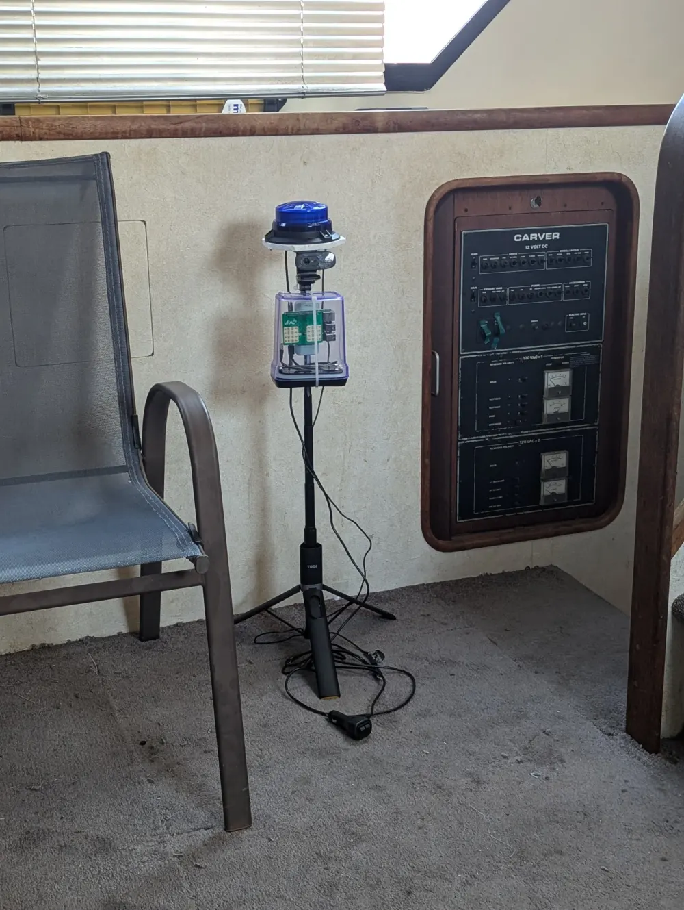
FALLSWAY-R
04 · Pipe cleaning and inspection · Designed
Every pipe ends in the Bay.
So we followed them back. FALLSWAY-R is a tethered crawler for the pipes under the city. We're designing it to clear a defined blockage, film the wall it just cleaned and hand the utility a record of the job.
Machine shown as a design. No physical trial yet.
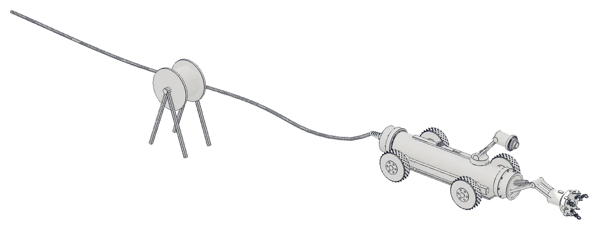
How it works.
- Lowered through a manhole on its tether.
- Works the defined obstruction.
- Logs the wall, marking every target readable or not.
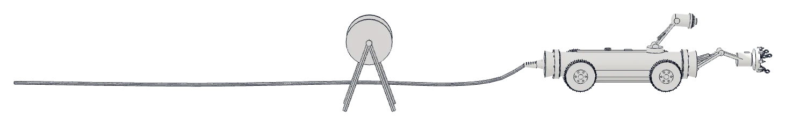
The numbers so far.
| Assembly | 233 solids with wheel modules | Designed |
|---|---|---|
| Reference traction | 23.68 N friction limit at 13.5 kg | Calculated |
| Cost per accepted job | 25% lower than today's crews | Target |
Engineering note
A cleaning nozzle can't simply be bolted on. At 13.5 kg the crawler has 23.68 N of traction available and 22.03 N of resistance before any tool load, so the next design gives the cleaning tool its own load path. The inspection tool checks 80 wall targets and never counts missing footage as a clean pipe.
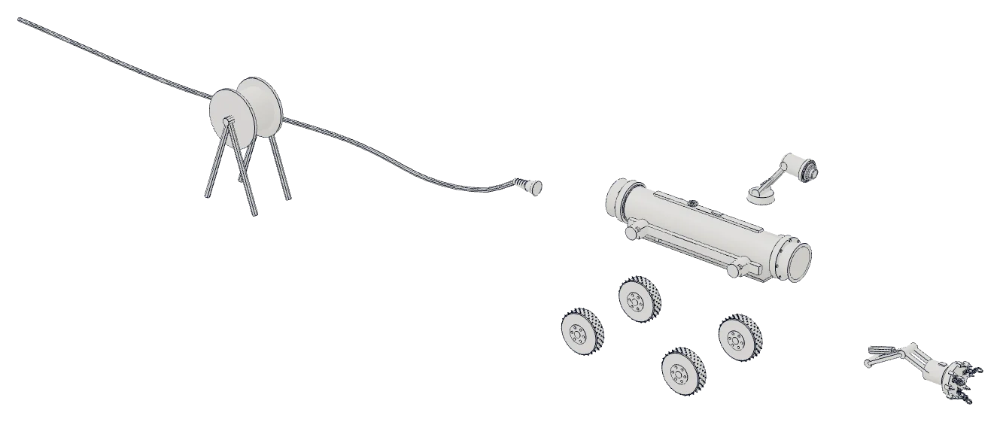
Still to prove.
Sealed harness, independent power cutoff, rated recovery hardware, tool restraint and trials on a real customer job.
| Rover mechanical design | Full assembly with wheel modules and retention hardware | Designed |
|---|---|---|
| Pipe cleaning trials | No physical trial yet | Next |
| Head-to-head against incumbents | Planned once physical trials exist | Next |
SWARM-N
05 · Neighborhood fire response · Simulated
First water on the block.
A supervised swarm of small aircraft for exterior fires near homes. Each one carries a small tank, delivers it and cycles through a refill station while the next takes its place.
Simulated scene. No aircraft has flown this payload.
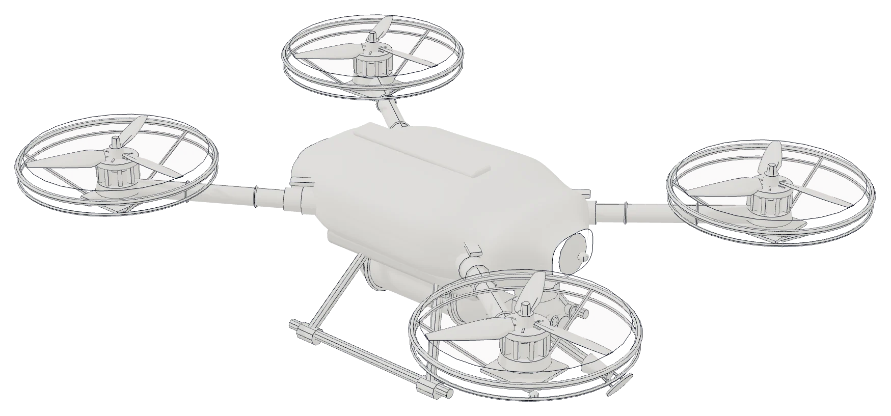
How it works.
- An operator assigns aircraft to a zone.
- Each aircraft delivers its tank on the hotspot.
- Empties refill while full aircraft take over.
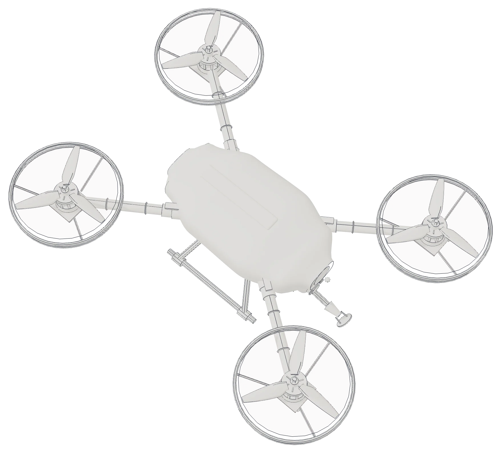
The numbers so far.
| Sizing example | 2 L at 10 L/min, 12 s of flow | Calculated |
|---|---|---|
| Fleet example | 6 aircraft, 2 stations: 32 L in 10 min | Simulated |
| Control | Human supervisor on every sortie | Design rule |
Engineering note
Two liters plus delivery hardware is a 2.4 kg payload, and it's gone in 12 seconds at 10 L/min. That already rules out hobby-class airframes. Fleet size isn't the limit either: in our model, six aircraft deliver 22 L with one refill station and 32 L with two.
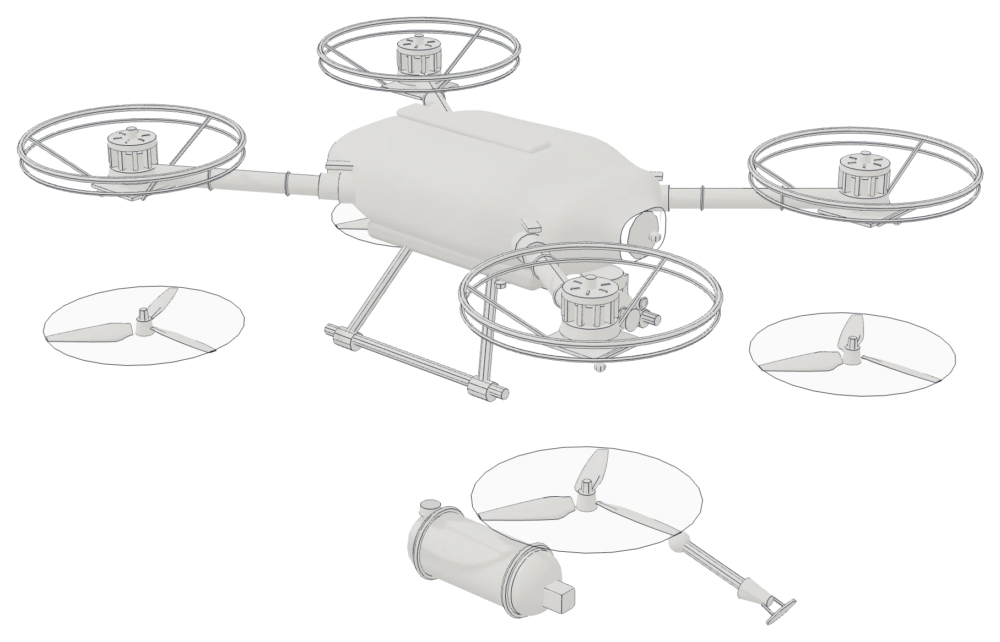
Still to prove.
Useful water quantity, aircraft sizing, response cycle, flight envelope and real fire-control results. Outdoor operation under FAA Part 107 also needs waivers for one pilot flying several aircraft and for flight beyond line of sight.
| Payload safety logic | 56 native assertions, checked for memory errors | Software tested |
|---|---|---|
| Aircraft flight with water | No aircraft has flown this payload | Next |
| Head-to-head against incumbents | Planned once physical trials exist | Next |
OVERHEAD-H
06 · Industrial overhead attack · Simulated
A nozzle where no ladder reaches.
For tank farms, rail yards and high-bay plants. The pump and the water stay on the ground. A heavy aircraft holds the hose at working height and aims it.
Simulated scene. No aircraft has flown this payload.
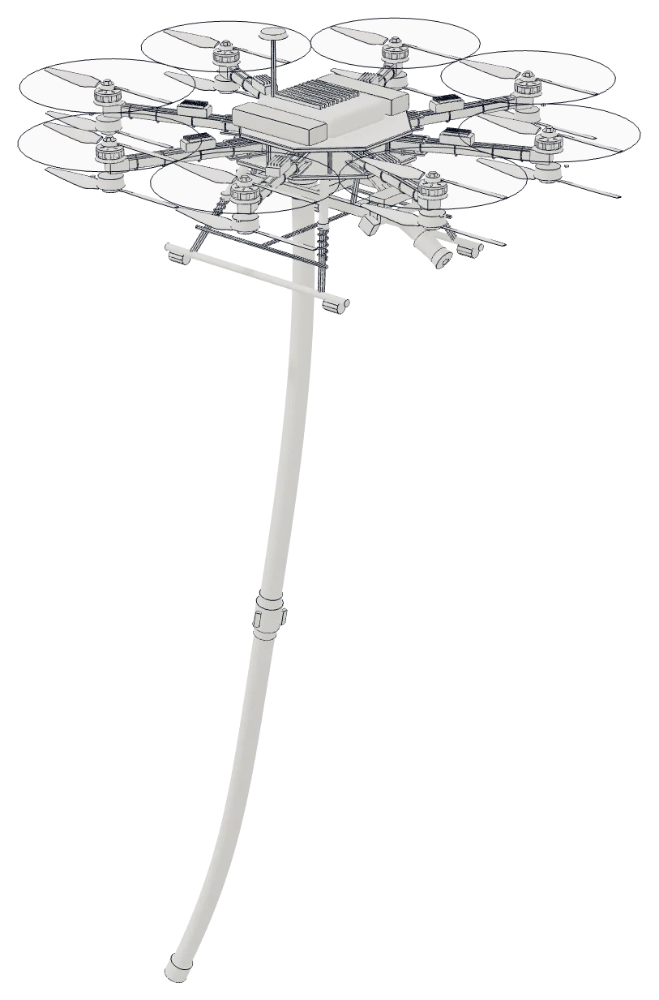
How it works.
- Pump and hose stage on the ground.
- The aircraft lifts the nozzle to working height.
- Stopping the water stays separate from stopping flight.
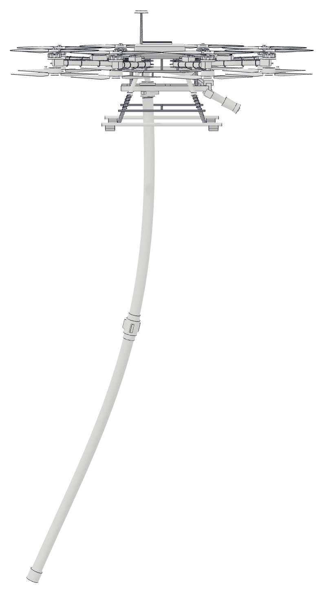
The numbers so far.
| 15 m working height | 40 L/min, 4.71 bar, 523 W pump shaft | Calculated |
|---|---|---|
| 100 m working height | 100 L/min, 20.64 bar, 5.73 kW | Calculated |
| 3 N side load | 11.6° peak tilt, 6-DOF model | Simulated |
Engineering note
Thrust isn't the hard part. A side force applied below the body is. In six-degree-of-freedom simulation, a 3 N side load tips the aircraft 11.6°. At 8 N it reaches 29.2° and fails our 25° screen. Exterior work and indoor high-bay work are separate programs with separate problems.
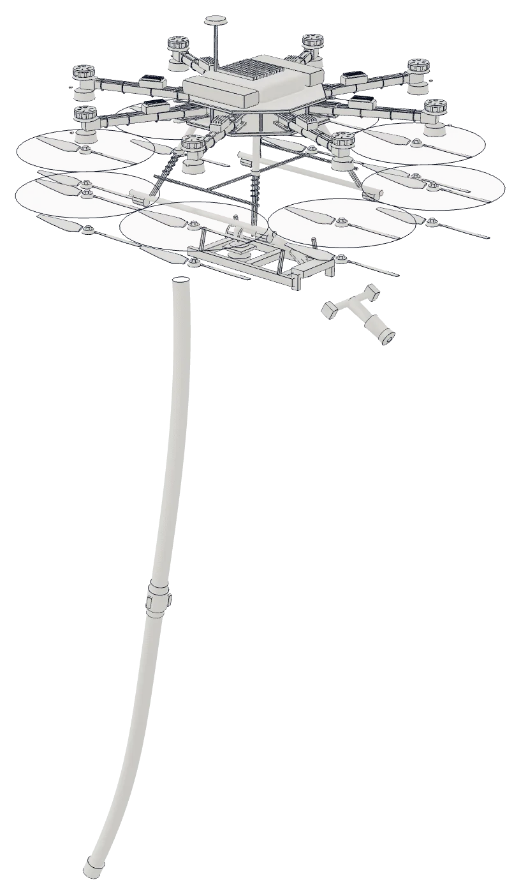
Still to prove.
Real hose forces and moments, restraint and release behavior, host-aircraft compatibility and thermal limits.
| Flight dynamics | Six-degree-of-freedom model, 24-case parameter sweep | Simulated |
|---|---|---|
| Payload safety logic | 56 native assertions, checked for memory errors | Software tested |
| Aircraft flight with water | No aircraft has flown this payload | Next |
| Head-to-head against incumbents | Planned once physical trials exist | Next |
Harbormaster
07 · Fleet software
The software that decides which machine goes where.
Harbormaster is the software that decides which machine goes where. When six aircraft are working the same fire, each one needs an area to work in, a pilot and a turn to refill with water. Harbormaster gives those out, and it never gives the same one to two aircraft at once.
An example
- Six aircraft are working one fire. There are three places to refill.
- Harbormaster gives each aircraft its turn, so two never head for the same refill station.
- One aircraft loses its radio link. Its place stays reserved until a person confirms it has landed.
The name comes from the harbormaster at a port: the person who decides which ship docks where. Harbormaster is software. The demos on this page run in your browser and are not connected to any hardware.
-
Assign
Every aircraft, pilot, work area and refill station can be given out only once at a time. Try to give one out twice and Harbormaster refuses. -
Hold
If an aircraft's radio link drops, its place stays reserved until a person confirms it's on the ground. -
Record
Every run is logged: pressure, the weight of water collected, forces, temperature and the time of each reading. The log is then checked for gaps and bad values. -
Separate
The water and the flying are controlled separately. Turning off the water never turns off the aircraft.
What happens when an aircraft goes quiet.
Here is that rule working. When an aircraft loses its radio link, a refill station stays reserved for it, so the rest of the fleet can't take it. The hold ends only when a person confirms the aircraft is on the ground.
Try it
- Press Cut an aircraft's radio link.
- One refill station turns red. It is being kept for that aircraft, and no other aircraft is sent there.
- Press Confirm it has landed to free the station.
What you're looking at: a practice run. Six aircraft carry water from three refill stations to a fire, then come back for more. The blue in each aircraft is the water it has left. The yellow lines are Harbormaster's radio links.
A swarm is only as fast as its refill stations.
Aircraft have to come back to refill. With too few refill stations they wait in line, and adding more aircraft stops helping. Move the sliders and watch how much water is delivered in ten minutes.
Try to turn the water on when it shouldn't be.
This is the safety logic for the water. Press the buttons in any order and try to get the water on when it shouldn't be.
- A late command can't revive expired permission.
- Holding the switch at startup doesn't arm it.
- Recovery never restarts the water on its own.
It runs here in the browser and isn't connected to any hardware.
Status
08 · Where things stand
What exists today.
The rest of this site shows where we're going. This table shows where we are.
| Item | Detail | Status |
|---|---|---|
| Rover mechanical design | Full assembly with wheel modules and retention hardware | Designed |
| Drone load cassette | Removable test cassette, 649 g calculated wet payload | Designed |
| Structural analysis | Beam model within 0.55% of the closed-form answer | Simulated |
| Flight dynamics | Six-degree-of-freedom model, 24-case parameter sweep | Simulated |
| Payload safety logic | 56 native assertions, checked for memory errors | Software tested |
| Aircraft flight with water | No aircraft has flown this payload | Next |
| Pipe cleaning trials | No physical trial yet | Next |
| Head-to-head against incumbents | Planned once physical trials exist | Next |
By the numbers.
Counted from the design files and the test suite as they stand.
- 233
- solids in the rover assembly
- 19
- editable mechanical designs
- 62,428
- elements in the finest fixture model
- 723
- automated software tests
The next three gates.
- Gate 1
Measure
Build the physical force-reference fixture and put real numbers on hose, nozzle and traction forces. Replace every assumed value with a measured one. - Gate 2
Integrate
Sealed harness, independent power cutoff, protected electrical interfaces, rated recovery hardware, and a host aircraft with measured mass and center of gravity. - Gate 3
Prove
Run trials on real customer jobs and count cost per accepted job, including failed runs, recovery attempts and rework.
Crew
09 · Station staff
The people behind the work.
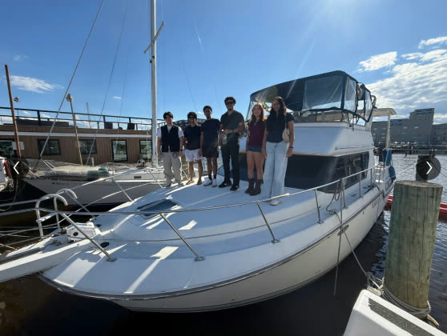
Tyler Duckett
RF Engineer
Five years as a Marine Corps radar technician, keeping an S-band AESA radar on the air across the Pacific. Now building the radio links our machines depend on.
Tyler leads antenna and RF work on a 440 MHz balloon payload at the University of Maryland while studying electrical engineering. Every sortie and every rover run needs a link that holds. That link is Tyler's job.
On the radar, the job was fault isolation across transmit and receive modules, prime power, liquid cooling and signal processing, then alignment and calibration after every site move: transmit power, receiver sensitivity and timing, back to specification.
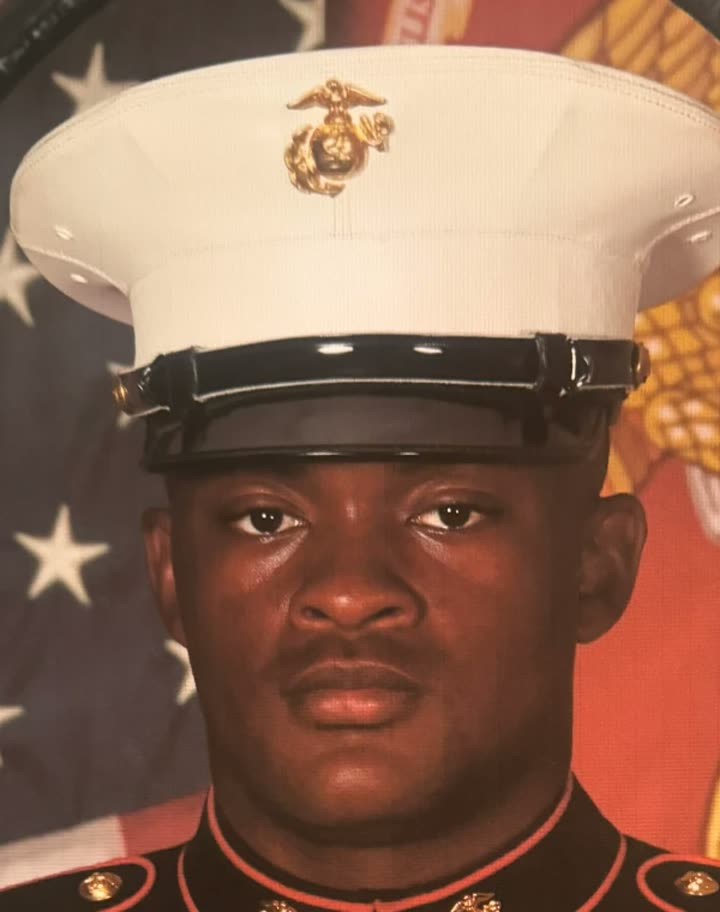
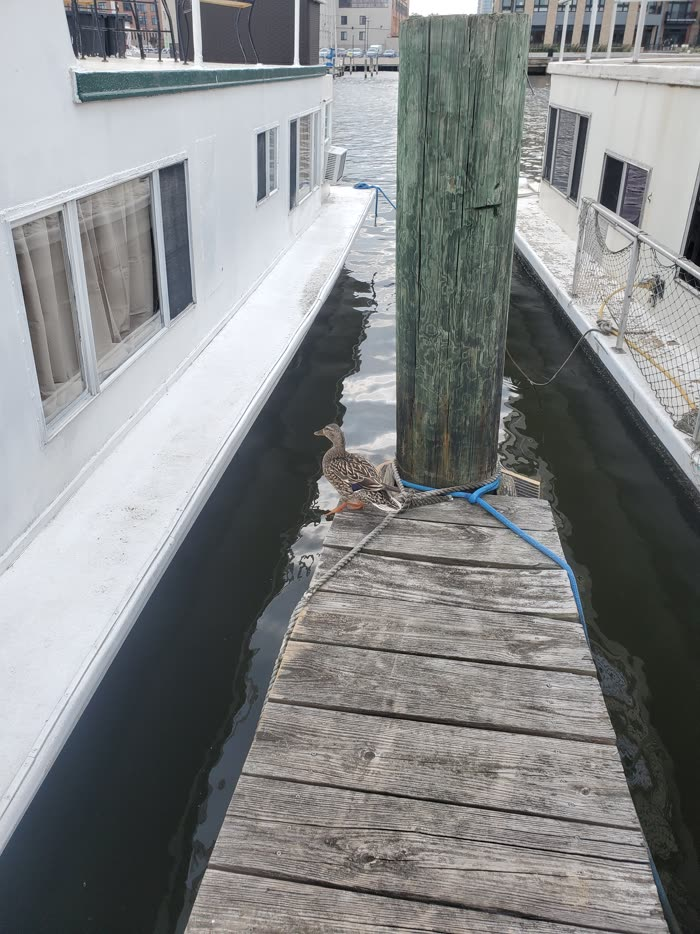
Mike Kardas
Principal Investigator
Systems engineering manager for more than 30 years at Northrop Grumman. Mike ran the student lab as principal investigator and put the work on the water.
Sophia Roberts-Weigert
Mentor, Boat
Mechanical engineer with a research background in mechatronics and robotics, working across SolidWorks, MATLAB, Arduino, Python and C++. Sophia led the boat work this company grew from.
Eyobed Beyene
Mentor, Rover
Placed first in the 2022 Northrop Grumman Mission Systems Environmental Sustainability Challenge. Eyobed mentors the rover program.
Dominic Liriano
President
First-generation college student studying Fire Protection Engineering at the University of Maryland. Raised in Maryland by a mother who became the youngest and first female captain in the DC Fire Department.
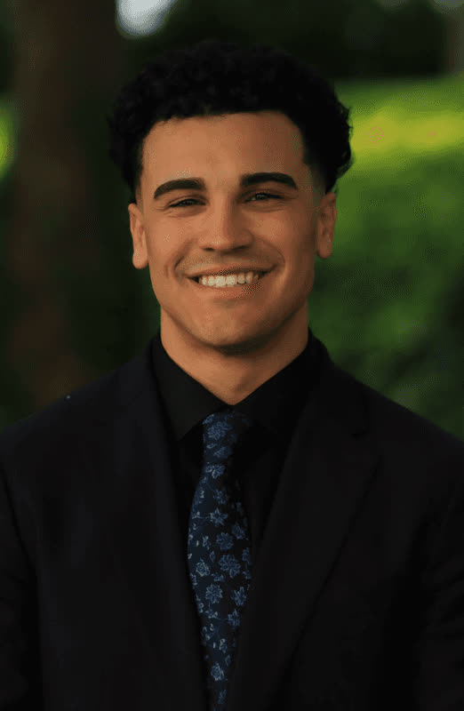
Origin
10 · How we got here
We learned autonomy on the Chesapeake.
Baltimore Dynamics grew out of the Northrop Grumman Innovation Lab at the University of Maryland. Northrop Grumman backs the company.
- Drones over the Bay Aerial collection runs for Chesapeake water sampling.
- Algae sampling Field samples and imagery from algae blooms in Bay waters.
- AESV system design Architecture for the Autonomous Environmental Survey Vessel: stationkeeping, dead-zone mapping and truth data for satellite sensors.
- AESV on the harbor Test days for the autonomous hull in Baltimore Harbor.
- Coast Guard demo The boat system demonstrated for the U.S. Coast Guard.
- Solar water station Pier-mounted monitoring of pH, dissolved oxygen, turbidity and temperature.
- Fire and pipe programs SWARM-N, OVERHEAD-H and the pipe rover move into digital design and simulation.
- Baltimore Dynamics March Onwards becomes a company with one job: machines for the worst parts of a city.
The story.
Baltimore Dynamics grew out of the Northrop Grumman Innovation Lab at the University of Maryland, a student lab with one standing question: where are the Bay's dead zones, and can a machine find them first?
Sophia Roberts-Weigert led the boat work. Mike Kardas ran the lab and put it on the water, on a boat that became our floating workshop. We rebuilt drones on the deck and ran autonomous hulls in Baltimore Harbor. Now we're partnering with Mr. Trash Wheel to help give them their radar and sensors.
Fires and failing pipes look nothing like a dead zone. The job underneath is the same: send a machine somewhere bad for people, bring it back and prove what it did.
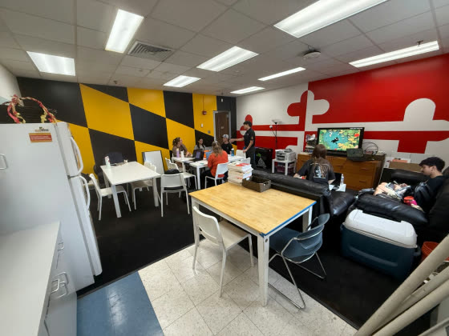
Field log
11 · Real photographs
The work so far.
Real photographs from the boat, the Bay and the lab.
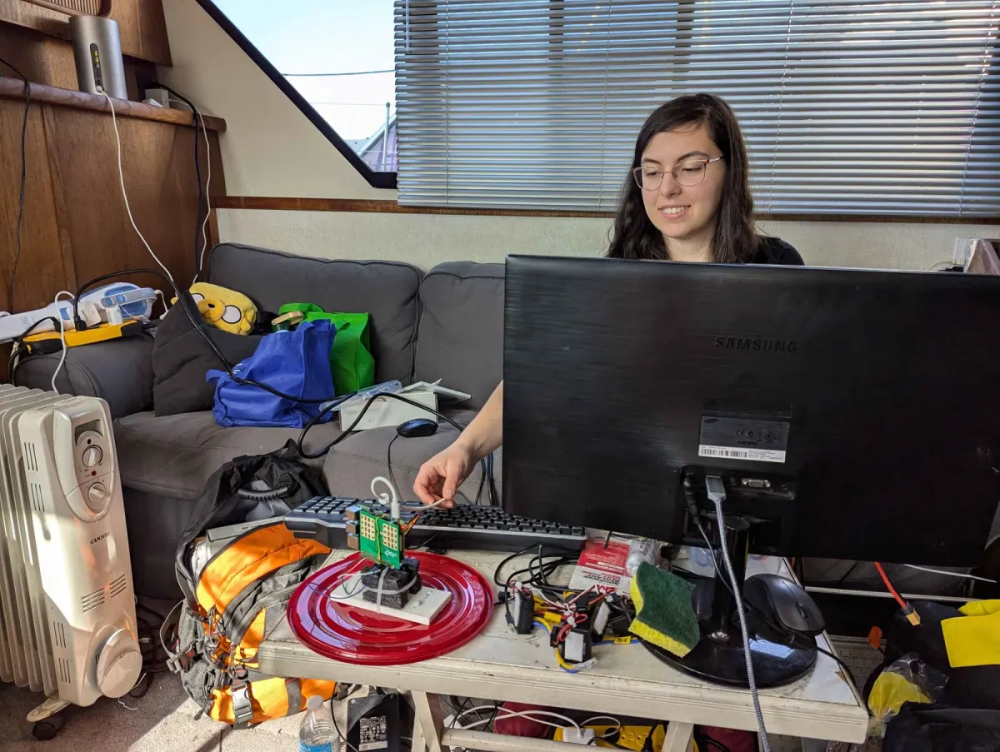
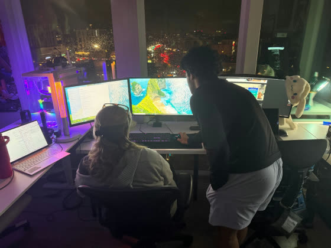
Contact
12 · Baltimore, Maryland
Build it with us.
We want to hear from investors, fire departments, utilities and engineers who'd rather work on hard machines.
Email us support@narb.cc
Backed by
Baltimore Dynamics systems are in development and have not been flight-tested or field-tested. Machines on this site are shown as drawings and simulations and do not depict existing hardware. Baltimore Dynamics is backed by Northrop Grumman and Mr. Trash Wheel. Other organizations named on this site describe past work and do not imply endorsement. Military service is listed as biography and does not imply endorsement by the U.S. Marine Corps or Department of Defense. This site is not an offer to sell securities. © 2026 Baltimore Dynamics.
Photograph of Mr. Trash Wheel: Matthew Bellemare, CC BY-SA 2.0, cropped and cut out on the first screen, cropped and converted to black and white elsewhere. Map data © OpenStreetMap contributors. Depth data: NOAA ETOPO 2022.
.jpg){kind=link}
This site counts visits with PostHog. It sets no cookies and stores nothing on your device.
Transit map styling is a format only. This company operates no transit service and uses no agency's marks.